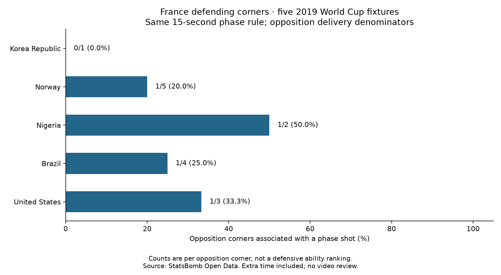

Football analyst training · Lesson 60
Turn the question around.
Until now: what did France create from its corners? Now: what did opponents create from corners against France?
The completed assignment
In the same five matches, France faced 15 opposition corners. Four were associated with an opposition shot under our phase rule:
4 corners with an opposition shot ──────────────────────────────── × 100 = 26.7% 15 opposition corners faced
Those phases contained four shots and zero shot goals. The other 11 corners had no qualifying shot under the rule; that does not prove all 11 were defended perfectly.

Same method, different team
- Attacking view: France takes the corners; count France shots. Earlier result: 19/45 = 42.2%.
- Defensive view: the opponent takes the corners; count opponent shots. New result: 4/15 = 26.7%.
The two percentages are not complements: they describe different sets of corners. The fixed phase remains same possession, at most 15 seconds, with restart, period and goal boundaries. Extra time is included; penalties and shootouts are excluded.
What can we conclude?
France allowed a qualifying shot after 4 of these 15 corners. That is a sample description, not proof of strong marking or a defensive ranking. We have not adjusted for opponents or shot quality, and no footage was reviewed.
A useful follow-up for video review: who won first contact, was the clearance controlled, and how did the shot arise? The event count alone does not answer those questions.
Practice: should we divide the four defensive positive corners by France's 45 attacking corners?
No. Use the 15 opposition corners France faced. Numerator and denominator must describe the same set of deliveries.
Run 60_france_defensive_corners.py in Spyder. Read the defensive report. This assignment was assisted; ask your teacher about any unclear selection rule.